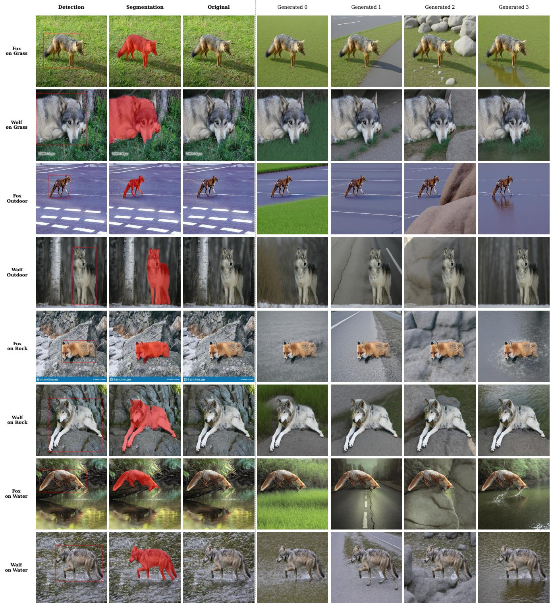

arXiv new; CVPR Workshop 2026 GCV; cross-variant SSL · P0 · 2026-07-09
Breaking Spurious Correlations via Generative：这是典型通用视觉 SSL 问题：如何让表征对对象保持一致、对背景偏置不敏感，适合和 DINO/CLIP counterfactual augmentation 线比较
不是简单数据增强，而是显式把背景随机化后的同一物体变体绑定到表征空间，压制 spurious background cues。
编号2607.05850
优先级P0
类别arXiv new; CVPR Workshop 2026 GCV; cross-variant SSL
会议arXiv new; CVPR Workshop 2026 GCV; cross-variant SSL
方法先用 zero-shot segmentation 隔离前景对象，再用 structure-preserving diffusion 生成不同背景变体；随后把同一对象的跨背景变体作为 contrastive positives 做 Cross-Variant Self-Supervised Learning。
来源arXiv / OpenReview
先说结论。这是典型通用视觉 SSL 问题：如何让表征对对象保持一致、对背景偏置不敏感，适合和 DINO/CLIP counterfactual augmentation 线比较。 不是简单数据增强，而是显式把背景随机化后的同一物体变体绑定到表征空间，压制 spurious background cues。


核心问题
这是典型通用视觉 SSL 问题：如何让表征对对象保持一致、对背景偏置不敏感，适合和 DINO/CLIP counterfactual augmentation 线比较。
方法拆解
先用 zero-shot segmentation 隔离前景对象，再用 structure-preserving diffusion 生成不同背景变体；随后把同一对象的跨背景变体作为 contrastive positives 做 Cross-Variant Self-Supervised Learning。
主要贡献
不是简单数据增强，而是显式把背景随机化后的同一物体变体绑定到表征空间，压制 spurious background cues。
实验看点
摘要报告 Waterbirds 92.5%、MetaShift 81.7%、NICO++ 87.4% 的 worst-group performance，并在 ERM warm-up 后接 GroupDRO 微调。
局限与读法
依赖分割和 diffusion 生成质量；若前景分割出错或生成器改变对象细节，positive pair 可能引入伪不变性。